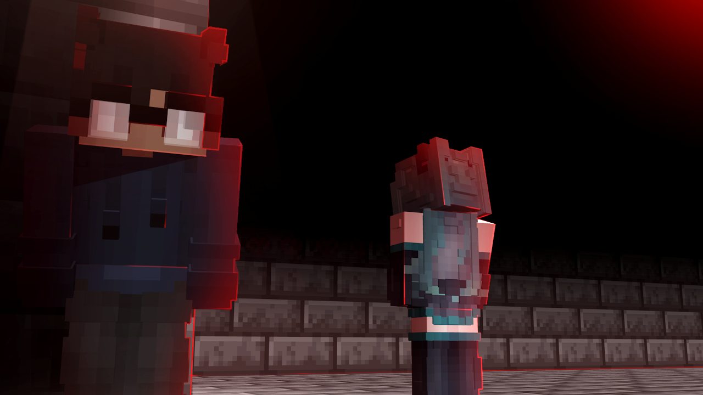
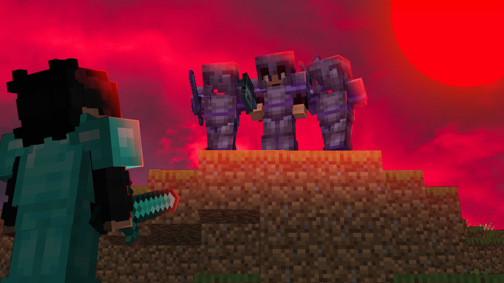
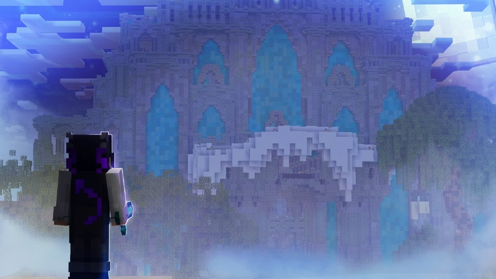
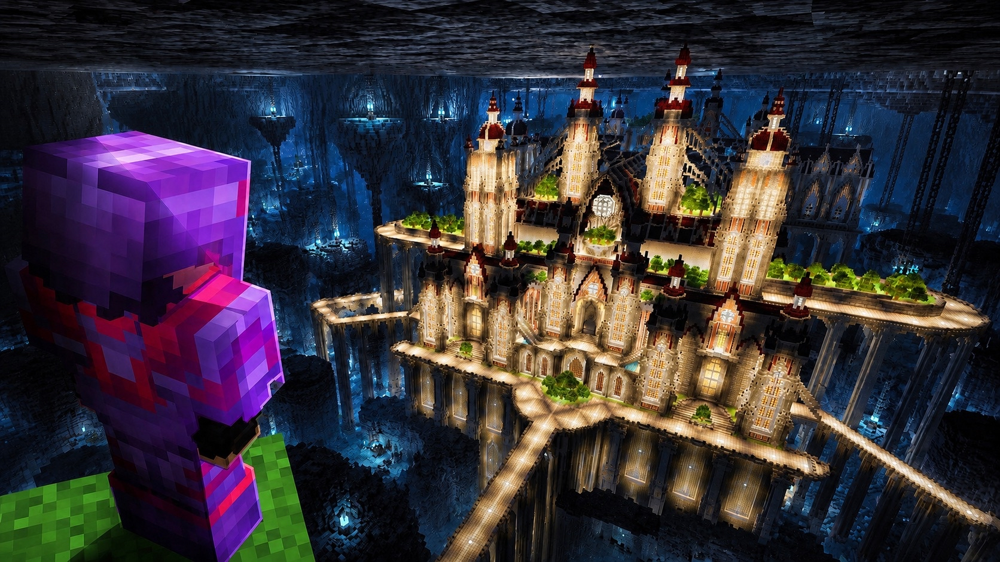
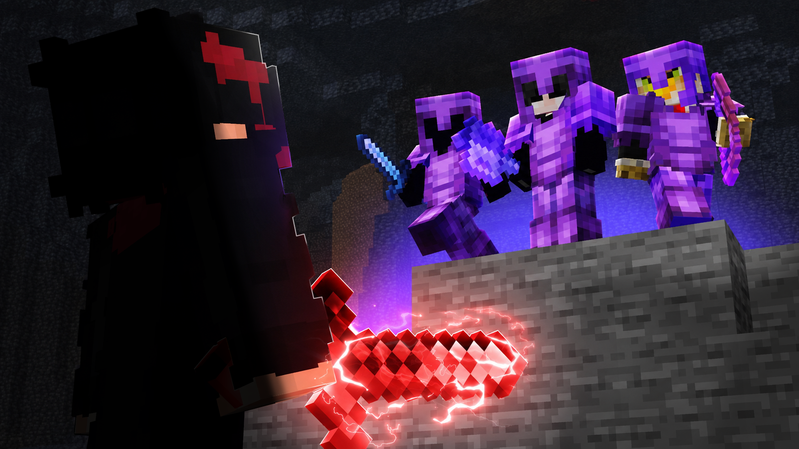
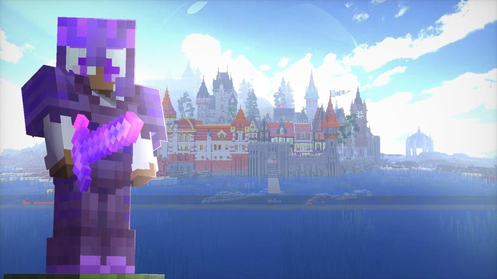
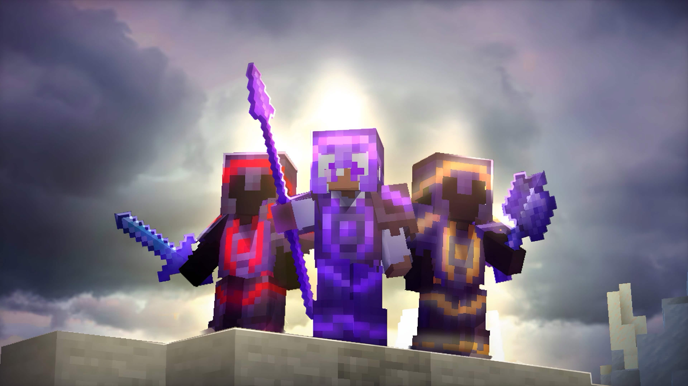

Prior event / 01
Record pending
This event predates the first recorded episode. Details will be added to the timeline later.
BEFORE
THE VIDEOS
THE VIDEOS
TIMELINE
Published videos are placed where they occur in the story, not by upload date. Hover over a published thumbnail for a brief preview, or open its summary for more context.
↔ Drag or scroll to move through time
This event predates the first recorded episode. Details will be added to the timeline later.
This part of the server's history has not yet been entered into the public record.
The final placeholder before the recorded story begins. This file will be expanded later.

Watch episode 8 sec previewAkumu's recorded story begins with an attempt to save one of Minecraft's most destructive players—establishing the first visible chapter of this timeline.
Watch on YouTube ↗
Watch episode8 sec previewAkumu becomes the target of Minecraft's largest nation. This perspective occurs alongside Sighf's discovery of the lost vault.
Watch on YouTube ↗
Watch episode8 sec previewSighf discovers Minecraft's lost vault while Akumu's hunt unfolds elsewhere in the same chapter of the chronology.
Watch on YouTube ↗
Watch episode8 sec previewAkumu uncovers a lost civilization, widening the story beyond individual conflict and into the forgotten history of the world itself.
Watch on YouTube ↗
File unavailableThis episode's title, link, and timeline summary have not been released yet.

Watch episode8 sec previewSighf turns toward one of Minecraft's poorest civilizations, placing its survival at the center of his next recorded chapter.
Watch on YouTube ↗
File unavailableThis episode's title, link, and timeline summary have not been released yet.
The story continues